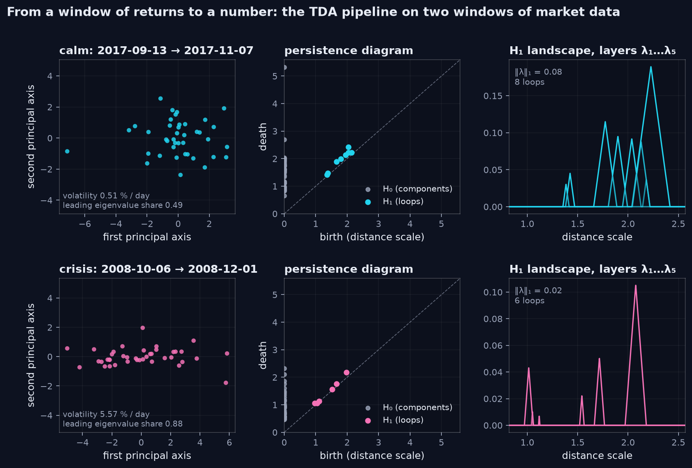
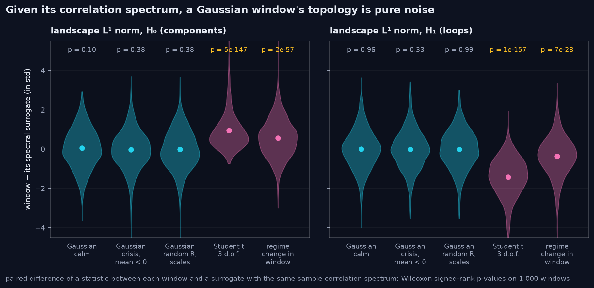
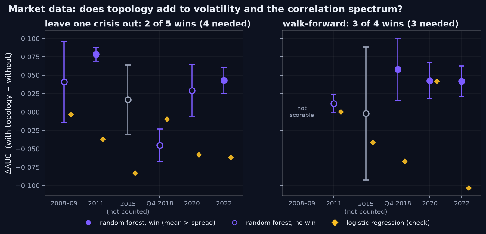

Does the shape of a window of daily returns, measured with persistent homology, tell market crises apart better than volatility and correlation do? An exact result on what topology can see, a replication of Gidea & Katz (2018) and two pre-registered tests.

For Gaussian days, a window standardised per asset satisfies \(ZZ^\top = n\,V\,\mathrm{diag}(\hat\lambda)\,V^\top\), with \(\hat\lambda\) its sample correlation spectrum and \(V\) a uniformly random frame independent of it.
So: given the spectrum, the topology is noise. It can add to volatility and correlation only through heavy tails or a regime change inside the window.

